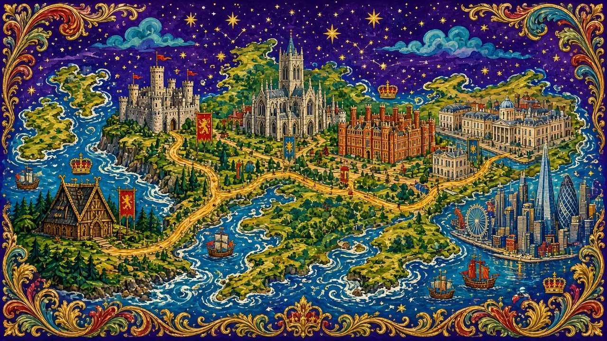

Learning from the Past: An English Odyssey
76 kings, queens and turning points across 2 nations — each a short true story with something useful for today.
From Alfred hiding in the Somerset marshes to a king crowned in 2023, this series walks through more than a thousand years of history one ruler at a time. It covers England (Saxons to Windsor) and Scotland (Duncan to James VI), following the contents of a classic book of kings and queens. Every lesson is a short true story, told carefully: where the sources disagree or a famous tale is only legend, the lesson says so.
Each story ends with “Learning from the past — for today”: one practical idea for work, money, leadership or everyday life. And each lesson teaches one grammar structure that history naturally needs — the past perfect, the passive, the third conditional, reported speech and more.
🧭 The timeline
Every stop on the journey, in order. The numbers and pictures come from the Major System Palace — tap any stop to open its lesson.
 1Alfred the Great871–899
1Alfred the Great871–899 2Edward the Elder899–924
2Edward the Elder899–924 3Æthelstan924–939
3Æthelstan924–939 4Edmund I939–946
4Edmund I939–946 5Eadred946–955
5Eadred946–955 6Eadwig955–959
6Eadwig955–959 7Edgar the Peaceful959–975
7Edgar the Peaceful959–975 8Edward the Martyr975–978
8Edward the Martyr975–978 9Æthelred the Unready978–1013, 1014–1016
9Æthelred the Unready978–1013, 1014–1016 10Sweyn Forkbeard1013–1014
10Sweyn Forkbeard1013–1014 11Edmund Ironside1016
11Edmund Ironside1016 12Cnut the Great1016–1035
12Cnut the Great1016–1035 13Harold Harefoot1035–1040
13Harold Harefoot1035–1040 14Harthacnut1040–1042
14Harthacnut1040–1042 15Edward the Confessor1042–1066
15Edward the Confessor1042–1066 16Harold II1066
16Harold II1066 17
17 18
18 19
19 20
20 21
21 22
22 23
23 24
24 25
25 26
26 27
27 28
28 29
29 30
30 31
31 32
32 33
33 34
34 35
35 36
36 37
37 38
38 39
39 40
40 41
41 42
42 43
43 44
44 45
45 46
46 47
47 48
48 49
49 50
50 51
51 52
52 53
53 54
54 55
55 56
56 57
57 58
58 59
59 60Duncan I the Gracious1034–1040
60Duncan I the Gracious1034–1040 61Macbeth1040–1057
61Macbeth1040–1057 62Lulach the Fool1057–1058
62Lulach the Fool1057–1058 63Malcolm III Canmore1058–1093
63Malcolm III Canmore1058–1093 64Donald III Bane1093–1097
64Donald III Bane1093–1097 65David I the Saint1124–1153
65David I the Saint1124–1153 66Robert I the Bruce1306–1329
66Robert I the Bruce1306–1329 67David II1329–1371
67David II1329–1371 68Robert II1371–1390
68Robert II1371–1390 69Robert III1390–1406
69Robert III1390–1406 70James I1406–1437
70James I1406–1437 71James II1437–1460
71James II1437–1460 72James III1460–1488
72James III1460–1488 73James IV1488–1513
73James IV1488–1513 74James V1513–1542
74James V1513–1542 75Mary, Queen of Scots1542–1567
75Mary, Queen of Scots1542–1567 76James VI1567–1625
76James VI1567–1625🧠 Optional: the memory palace
Each ruler is a numbered stop on the journey, and every number has a picture in Malcolm’s Major System Palace — 1 is a tie, 2 a hen, 16 a dish, 40 a rose. Each lesson ends with a short image linking the ruler to their picture (Harold II, stop 16, and the dish cracked by a Norman arrow; Elizabeth I, stop 40, and the Tudor rose).
You don’t need the system to enjoy the stories. But if you want to remember the order of every monarch, walk the pictures in your head — and the whole of history comes with them.
England
🛡️ Saxon England16
From Alfred's marshes to the arrow at Hastings — the making of England.
🏰 The Normans4
Conquest, castles and a book that counted everything.
⚔️ The Plantagenets8
Empire, Magna Carta, crusades and the birth of parliament.
🌹 The House of Lancaster3
A usurper's crown, Agincourt, and a gentle king in a violent age.
🌹 The House of York3
Comebacks, a vanished prince, and a king under a car park.
👑 The Tudors6
Roses united, Rome rejected, and a golden age of theatre.
📜 The Stuarts7
Gunpowder, civil war, a republic and the rules of modern kingship.
🎻 The Hanoverians6
Bubbles, revolutions, reform and an age named after a queen.
📻 The House of Windsor6
Radio, war, abdication and seventy years of duty.
🏴 Scotland17
From Duncan and Macbeth to the union of the crowns.
No lesson matches that search. Try a name, a house, a date or a grammar word.
How each lesson works
Ten words unlocked first, so the story reads smoothly.
A true story in three parts, with checks and discussion as it builds.
One structure the history teaches by example, with practice.
The bigger picture, the lesson for today, and the memory peg.
Three timed tasks that put it all to work.
Picture credits
Portraits come from Wikimedia Commons (public domain unless stated). Colour illustrations were created for this series. Memory pictures © the Major System Palace.
- Alfred the Great — Alfred_the_Great,_silver_penny;_struck_875–880_(obverse).png, CNG - Classical Numismatic Group, CC BY-SA 2.5
- Edward the Elder — Edward_the_Elder_-_MS_Royal_14_B_VI.jpg, Unknown authorUnknown author, Public domain
- Æthelstan — Athelstan_(cropped).jpg, See description, Public domain
- Edmund I — Edmund_I_-_MS_Royal_14_B_VI.jpg, Unknown authorUnknown author, Public domain
- Eadred — Eadred_-_MS_Royal_14_B_VI.jpg, Unknown authorUnknown author, Public domain
- Eadwig — Eadwig_-_MS_Royal_14_B_VI.jpg, Unknown authorUnknown author, Public domain
- Edgar the Peaceful — New_Minster_Charter_966_detail_Edgar.jpg, Unknown authorUnknown author, Public domain
- Edward the Martyr — Edward_the_Martyr_-_MS_Royal_14_B_VI.jpg, Unknown authorUnknown author, Public domain
- Æthelred the Unready — Ethelred_the_Unready.jpg, See description, Public domain
- Edmund Ironside — Edmund_Ironside_-_MS_Royal_14_B_VI.jpg, Unknown authorUnknown author, Public domain
- Cnut the Great — Canute_and_Ælfgifu_cropped_(Canute).jpg, See Description (unknown), Public domain
- Harold Harefoot — Harold_Harefoot_in_the_Cambridge_University_Library.jpg, AnonymousUnknown author, Public domain
- Harthacnut — Harthacnut_-_MS_Royal_14_B_VI.jpg, Unknown authorUnknown author, Public domain
- Edward the Confessor — Bayeux_Tapestry_scene1_EDWARD_REX.jpg, Myrabella, Public domain
- Harold II — Bayeux_tapestry_stitches_detail..jpg, ~, Public domain
- William the Conqueror — William_the_Conqueror_(TFA).jpg, Myrabella, Public domain
- William II (Rufus) — William_II_of_England_Historia_Anglorum.png, Matthew Paris, Public domain
- Henry I — Worcester_chronicle_-_Henry_I_in_a_hulk.png, John of Worcester, CC BY 4.0
- Stephen and Matilda — Stepan_kral.jpg, Henry of Huntingdon (Historia Anglorum), Public domain
- Henry II — Henry_II_Illumination.jpg, Gerald of Wales, Public domain
- Richard the Lionheart — Church_of_Fontevraud_Abbey_Richard_I_effigy.jpg, Adam Bishop, CC BY-SA 3.0
- King John — Jan_tomb.jpg, HISTORY OF ENGLAND by SAMUEL R. GARDINER, Public domain
- Henry III — HenryIII.jpg, AnonymousUnknown author, Public domain
- Edward I — Edward_I_-_Westminster_Abbey_Sedilia.jpg, Unknown authorUnknown author, Public domain
- Edward II — Cathedral_Church_of_St_Peter_and_the_Holy_and_Indivisible_Trinity,_Monument_to_Edward_II_of_England_Gloucester_1245952_20230819_0030.jpg, Tilman2007, CC BY-SA 4.0
- Edward III — Edward_III_of_England_(Order_of_the_Garter).jpg, William Bruges, Public domain
- Richard II — The_Westminster_Portrait_of_Richard_II_of_England_(1390s).jpg, anonymous / Possibly André Beauneveu, Public domain
- Henry IV — Illumination_of_Henry_IV_(cropped).jpg, The National Archives UK, Public domain
- Henry V — Henry_V_Corpus_Christi_MS_213.png, Jean Galopes, Public domain
- Henry VI — Henry_VI_of_England,_Shrewsbury_book.jpg, Poems and Romances (Shrewsbury book), illuminated by the MASTER OF JOHN TALBOT, Public domain
- Edward IV — Edward_IV_Plantagenet.jpg, Lucas Horenbout, Public domain
- Edward V — Edward_V._Royal_Window_Canterbury_Cathedral.jpg, Unknown authorUnknown author, Public domain
- Richard III — Richard_III_portrait.jpg, Barthel ii, Public domain
- Henry VII — Enrique_VII_de_Inglaterra,_por_un_artista_anónimo.jpg, anonymous, Public domain
- Henry VIII — After_Hans_Holbein_the_Younger_-_Portrait_of_Henry_VIII_-_Google_Art_Project.jpg, Workshop of Hans Holbein the Younger, Public domain
- Edward VI — Circle_of_William_Scrots_Edward_VI_of_England.jpg, Circle of William Scrots, Public domain
- Lady Jane Grey — Streathamladyjayne.jpg, Unidentified painter, Public domain
- Mary I — Anthonis_Mor_001.jpg, Antonis Mor, Public domain
- Elizabeth I — Darnley_stage_3.jpg, Unidentified painter, Public domain
- James I (and VI) — JamesIEngland_(cropped_2).jpg, Attributed to John de Critz, Public domain
- Charles I — King_Charles_I_after_original_by_van_Dyck.jpg, Workshop of Anthony van Dyck, Public domain
- Oliver Cromwell and the Commonwealth — Oliver_Cromwell_by_Samuel_Cooper.jpg, After Samuel Cooper, Public domain
- Charles II — King_Charles_II_by_John_Michael_Wright_or_studio.jpg, John Michael Wright, Public domain
- James II — James_II_by_Peter_Lely.jpg, School of Peter Lely, Public domain
- William III and Mary II — King_William_III_of_England,_(1650-1702).jpg, Godfrey Kneller, Public domain
- Queen Anne — Dahl,_Michael_-_Queen_Anne_-_NPG_6187.jpg, Michael Dahl, Public domain
- George I — King_George_I_by_Sir_Godfrey_Kneller,_Bt_(3).jpg, Workshop of Godfrey Kneller, Public domain
- George II — George_II_by_Thomas_Hudson.jpg, Thomas Hudson, Public domain
- George III — Allan_Ramsay_-_King_George_III_in_coronation_robes_-_Google_Art_Project.jpg, Allan Ramsay, Public domain
- George IV — Thomas_Lawrence_(1769-1830)_-_George_IV_(1762-1830)_-_RCIN_405918_-_Royal_Collection.jpg, Thomas Lawrence, Public domain
- William IV — William_IV_in_1833_by_Shee_cropped.jpg, Martin Archer Shee, Public domain
- Queen Victoria — Queen_Victoria_by_Bassano.jpg, Alexander Bassano, Public domain
- Edward VII — King-Edward-VII_(cropped)_(b).jpg, W. & D. Downey, Public domain
- George V — King_George_1923_LCCN2014715558_(cropped).jpg, Bassano Ltd, Public domain
- Edward VIII — HRH_The_Prince_of_Wales_No_4_(HS85-10-36416).jpg, Freeland Studio, Public domain
- George VI — King_George_VI_LOC_matpc.14736_A_(cropped).jpg, Matson Photo Service, Public domain
- Elizabeth II — Queen_Elizabeth_II_official_portrait_for_1959_tour_(retouched)_(cropped)_(3-to-4_aspect_ratio).jpg, Donald McKague, Public domain
- Charles III — King_Charles_III_(July_2023).jpg, White House, Public domain
- Malcolm III Canmore — Malcolm3Canmore.jpg, Alexander Bannermann, Public domain
- David I the Saint — Malcolm_IV,_King_of_Scotland,_charter_to_Kelso_Abbey,_1159,_initial_(crop_David_I).jpg, Unknown authorUnknown author, Public domain
- Robert I the Bruce — Medieval_coin,_Penny_of_Robert_the_Bruce_(FindID_961323-1097387)_Cropped.jpg, National Museums Liverpool , Heather Beeton, 2020-03-24 09:13:46, CC BY-SA 4.0
- David II — Scotland_penny_802002_(obverse).jpg, CNG, CC BY-SA 3.0
- Robert II — Robert_II,_King_of_Scotland_seal.png, Uncertain since the image is not credited. The author of the book itself died in 1924., Public domain
- Robert III — Robert_III_Scotland_groat_1390_701268.jpg, CNG, CC BY-SA 3.0
- James I — James_I_in_the_Froman_Armorial.jpg, Unknown authorUnknown author, Public domain
- James II — James_II_of_Scotland_(by_von_Ehingen).jpg, Unknown authorUnknown author to Georg (Jörg) von Ehingen, Public domain
- James III — Hugo_van_der_Goes_-_The_Trinity_Altarpiece_-_James_III_of_Scotland_accompanied_by_his_son_James,_presented_by_St_Andrew_(cropped).jpg, Hugo van der Goes, Public domain
- James IV — James_IV_of_Scotland_(2).jpg, Unknown authorUnknown author, Public domain
- James V — Portrait_of_James_V_of_Scotland_(1512_-_1542).jpg, Corneille de Lyon, Public domain
- Mary, Queen of Scots — François_Clouet_-_Mary,_Queen_of_Scots_(1542-87)_-_Google_Art_Project.jpg, François Clouet, Public domain
- James VI — JamesIEngland_(cropped_2).jpg, Attributed to John de Critz, Public domain
.png){kind=link}

.jpg){kind=link}


.jpg){kind=link}


.jpg){kind=link}


.jpg){kind=link}
.jpg){kind=link}
.jpg){kind=link}


.jpg){kind=link}


.jpg){kind=link}

.jpg){kind=link}


_-_George_IV_(1762-1830)_-_RCIN_405918_-_Royal_Collection.jpg){kind=link}


_(b).jpg){kind=link}
.jpg){kind=link}
.jpg){kind=link}
.jpg){kind=link}
_(cropped)_(3-to-4_aspect_ratio).jpg){kind=link}
.jpg){kind=link}

.jpg){kind=link}
_Cropped.jpg){kind=link}
.jpg){kind=link}


.jpg){kind=link}
.jpg){kind=link}
.jpg){kind=link}
.jpg){kind=link}
_-_Google_Art_Project.jpg){kind=link}